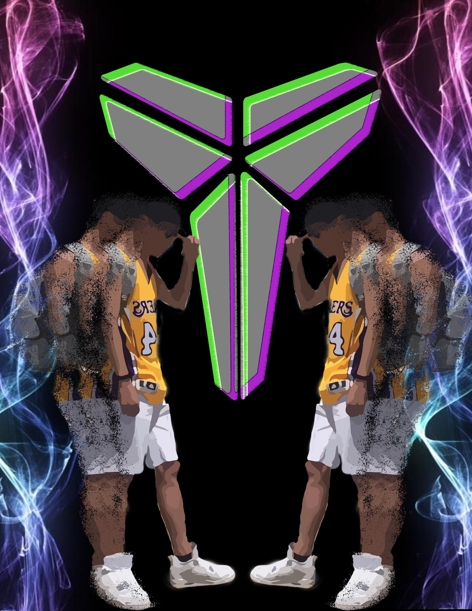
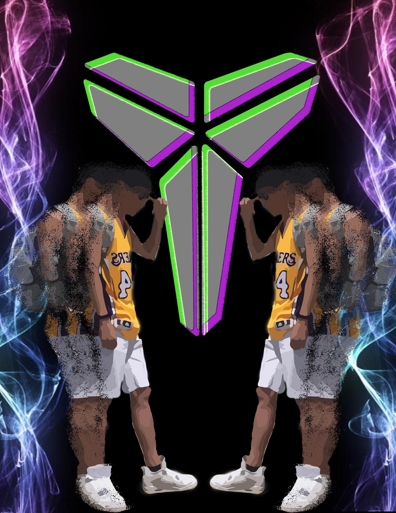

Interdisciplinary Visual Arts
Before I attended the University of Michigan School of Information, I graduated from the University of Washington, studying in Interdisciplinary Visual Arts.
From the coursework in Interdisciplinary Visual Arts, I explored many opportunities in the Art and Design fields. Throughout the coursework, I have developed skills in funiture design, graphic design, printmaking, and sculpture.
While at the University of Washington, studying in art gave me a lot of time to self-reflect and reflected on other artists’ meaning of art. Through that, I was able to find what I am interested in, which is to be able to empathize and reflect on what people want and their needs. This led me to participate in UW’s UX Design club and eventually led me to the University of Michigan to study User Experience Design and Research.

 
